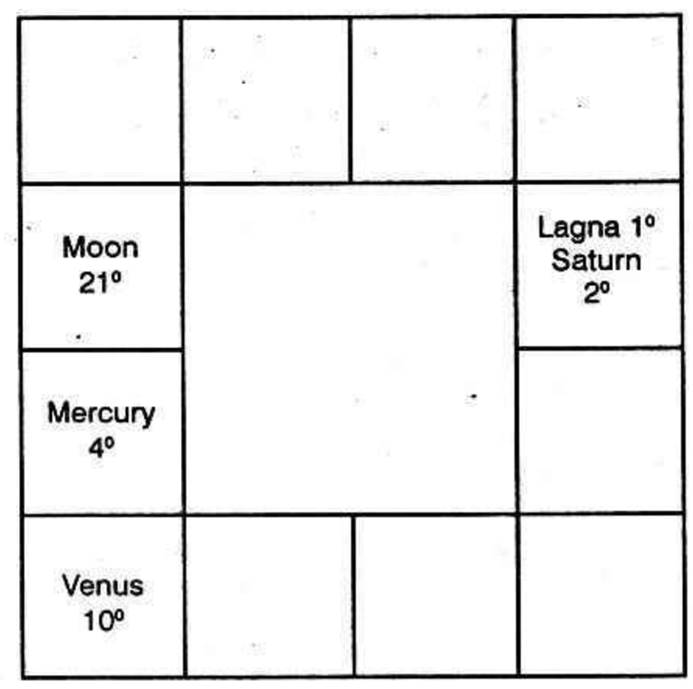
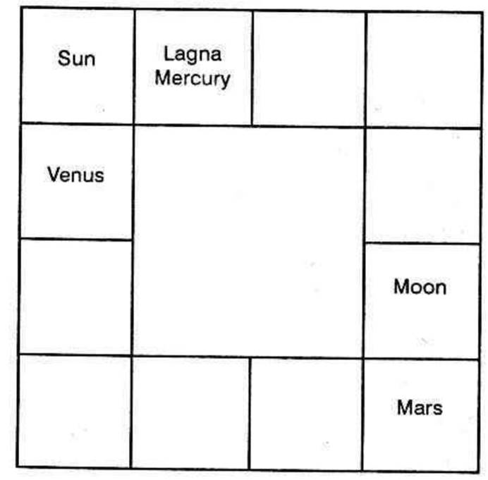
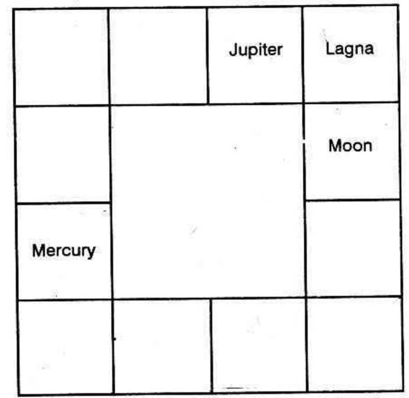

Loan is raised either when one spends or has to spend more than what he has on hand as also his income. Therefore, to know why and when debt is incurred, the horoscopes are to be examined to ascertain how money is earned or received and the cause of one's necessity to spend as well as the extent to which he is to meet the expenses.
Second house indicates one's bank position. cash on hand and readily cashable, movable property. Tenth house shows one's profession and inheritance. Eleventh house is the balance sheet indicating one's net profit. One may earn money through the sources indicated by houses 1 to 10 (i.e., 1st house, by his exertion; 2nd self - acquisition; 3rd through brother, short journey, touring, agency, editing; 4th education or transport department or through mother; 5th through speculation, cinema, music, children; 6th by serving others; 7th by business and through partners; 8th by insurance, legacy; 9th long journey, connection with foreigners; 10th through his own profession, business or ancestral property.) The house 12 indicates the expenses. Hence the benefits from houses 1 to 10 are added together and the loss from house 12 is deducted; the net balance is called the profit which is shown by the 11th house.
Generally, houses 2, 10 and 11 are studied to understand how one makes money: 6th house denotes why, when, and the extent to which one borrows; 8th house indicates either loss and misery or unexpected gains; or clearing off loan or lending money; 12th house indicates one's expenses, investments, repayment of loan or lending money, etc. Therefore, a careful consideration of the houses 6, 8 and 12 will indicate one's commitments, expenses, loss and the necessity to borrow.
The Ascendant indicates the person who borrows. The 7th house from his Lagna denotes the gentleman or the lady or the banker who advances the loan.
Sixth house denotes debts. What is a loan? It is an income to the person. His bank position improves by borrowing. To the person lending money, the sixth house is the twelfth (7th being his ascendant). i.e., it is a deterioration in his bank position to the extent to which he advances the loan. Therefore, debt is, the receipt of money by the person who borrows and expenses to one who lends.
As parting with money for expenses may be to discharge one's debts, 12th house of a person shows clearing off loans or part payment towards the debts already incurred. Is not the 12th house, the sixth from the 7th? Hence, to the native who borrows from this person or who receives back the loan; already lent, the 12th house indicates the receipt to the man with whom the transaction is done and who is indicated by the 7th house.
Hence the 6th house indicates raising of loan (receipt of money and the 12th house denotes repayment of loan or expenses. Kalidasa a in Uthra - Kalamritha has said that 12th house is to be judged for clearing off loans.
What about the 8th house?
The 8th house is the second to the 7th. Second house shows one's finance, whereas 7th house denotes one with whom a transaction is done. Suppose there is an evil planet in the 8th house of a person: it means that the evil is in the second house to one who transacts. It threatens that the person with whom the money transaction is done, will lose money and there will be difficulty.
But, if a benefic is in the 8th house, it promises the regaining of money with pleasure. "Somyae Ranthrae Dhanapthi" says Mahadeva. Everybody in this world will try to maintain prestige. None would wish to borrow unless circumstances force him to do so. If one has borrowed, he would desire to return it much earlier than the time required by him to repay.
If the sublord of 8th cusp is the significator of houses 5, 6, 8 and 12 difficulties come as a battalion and he has to face them by borrowing from his friends A to Z.
But if the sublord of the 8th Cusp is the Significator of 2, 10 or 11th houses and if its period or sub - period runs, with pleasure, he returns the money.
The tenth house shows one's profession, receipt of money, etc. Tenth house to the 7th opponent or lender is the fourth house to the native. Therefore, 4th house also indicates return of money, by the person, and the discharge of debts.
The eleventh house shows profit. The principal and the interest are indicated by the 11th house in the native's chart if he has lent money. But if he has borrowed, the 11th to the 7th shows the return of the amount. Therefore 5th house indicates discharge of debts.
Therefore receipt of money is indicated by the houses 2, 6, 10 and 11 whereas the discharge of debts can be read from the houses 4, 5, 8 and 12.
If beneficial planets occupy, own or aspect favourably the houses 2, 10 and 11, one will make money in their periods and sub periods, in their star days and week days. So also, benefics occupying the houses 4, 5, 8 or 12 or owning or aspecting these houses, or planets in the constellation of the occupants and owners of these houses indicate the discharge of the loan in their dasa, bhukti and anthara, in their week days and star days.
Planets in 2, 10 and 11 and in the Sub of Significators of 4, 5, 8 or 12 reduce one's income and there will be difficulty to make money. Similarly planets in 4, 5, 8 and 12 will increase the expenses if the sublord is the significator of 4, 5, 8 or 12 and they will not allow one to discharge the loan. But in their dasas and bhukties the native will suffer mental agony, anxiety, pressure, worry, depression, irritation, illrepute, humiliation etc.
This is the scientific explanation for a few houses being considered for the raising of funds and the rest for repayment.
Now, let us find out why one has to borrow and when.
When the sublord of 6 is also the Significator of 12 and associated with the houses 6, 8 or 12 the debt is incurred due to (1) one's ill - health or the expenses of his or her partner (12th to 7th), ill - health of partner (6th to 7th), unexpected loss, (8th and 12th) investment, etc.
By association, is meant that, (a) the house may be occupied by or aspected by a planet or (b) the lord of the house may occupy the houses 6, 8 or 12 or be conjoined with them or aspected by them. The following is the chart of a person who is ever in debts.
(1) Lagna is occupied by Saturn, the lord of 8. It is in the constellation of the lords of 6 (Punarvasu star ruled by Jupiter). The lord of Lagna is in the constellation of Jupiter, the lord of 6. It is occupying the 8th house.
Mercury, the lord of 12, aspects the Ascendant.
So ascendant is occupied by the lord of 8 and aspected by the lord of 12. The lord of the lagna is 8 in the constellation of the lord of 6. Here, the lord of Lagna is associated with the lord of 6. Lagna is associated with the lords of 8 and 12.

(2) When the lord of the second house is also the Significator of 6th, 8th or 12th house debt is caused by (a) expenses in the family, (b) medical bill for eye or throat treatment of the person, or (c) danger to partner, (d) or due to the loss of an younger brother, or (e) payment to mother or (f) to one's children at the time of their appointment or promotion or (g) as loan to father either for his business or to meet his loss. There will not be much difficulty to raise the loan. It may be hand loan or one kept in the suspense account.
(3) When the sublord of the cusp of 3rd house, or its lord is also the Significators of 6 or 12 the debt may be incurred due to the native's brother; if posited in male sign, and to sister if posited in female sign. The lord of 3 in a male sign and Mars in a female sign indicate expenses through both brother and sister. It may be raised to help a neighbour; or one may stand surety for another; or may borrow money to make short journeys, purchase a printing press or take up any agency or contract. Some may pledge shares, certificates and documents or ear rings, necklace, bangles, rings etc., to raise the loan if the 3rd house is connected with 6th house. If however houses 8 and 12 are associated, the sale of these jewels is indicated.
(4) Should the significator of 4 and Moon be associated with house 6, 8 or 12 the debt may be raised either through mother or for purchase of cattle or animals. If the significator of 4 and Mars are associated with 6, 8 or 12, one may borrow for the purchase of land, buildings, etc. Even raising a loan by pledging a house or land is indicated by the significator of 4 connected with the 6th house. The lord of 4 connected with the houses 3, 8 or 12 indicate generally the disposal of the Property.
If the lord of 6 has no connection with any benefic, but occupies the 9th house then, during the period of the lord of 4, the property may be brought to auction, sold or appropriated by the opponent.
(5) If the significator of 5 and Jupiter are connected with houses 6, 8 or 12, debts are caused on account of children (their education or danger to their lives). Or one may borrow due to the loss in speculation, cinema or any other risky enterprises or love affairs.
(6) If the significator of 6 is associated with Saturn, debt is caused due to the persistent inimical activity of the opponents, or due to loss by theft, and disease, Jupiter connected with them indicates that the necessity for borrowing is due to litigation. Jupiter, Mars and Sun connected with them indicate debts due to election.
If the significator of 7 and the lords of 2 and 10 are connected with houses 6, 8 or 12 debt is due to the partner in business. But if Venus and the significator of 7 are associated with 6, 8 or 12 the debt is caused through one's wife. If Jupiter and Significator of 7 are connected with 6, 8 or 12, litigation may need a large sum of money or one may borrow to meet the expenses of the second son. Waist belts made of gold etc. may be pledged.
(8) Should the Significator of 8 be associated with the houses 1, 8 or 12, and if a malefic also aspects, debts are caused due to enemies, danger, disease, difficulties, disharmony, dispute etc.
(9) If the 9th house or the Significator of 9 is connected with the lords of 6, 8 or 12 or the houses 6, 8 or 12 then the necessity to borrow may be due to father, or wife's younger brother or sister (there are people who incur debt to celebrate sister-in-law's marriage), or due to his partner's journey, or through the third child or the native going on a long journey or overseas or for higher studies.
(10) If the Significator of 10 and Sun are associated with the houses 6, 8 or 12 one may have to borrow to repay the debts left behind by father or due to business.
(11) If the Significator of 11 is associated with the houses 8 or 12 the debts may be due to the native's standing surety to a friend.
If the Significator of 11 and Mars are associated together with the houses 8 or 12 one may incur debts due to an elder brother.
Rahu dasa Balance 9 years, 5 months and 18 days.
When this native was running Saturn Dasa, Mars Bhukti, Jupiter Anthra he stood surety to his elder brother born in Anuradha star. Unfortunately in the beginning of December 1953, his elder brother, within a month, after the transaction passed away and the native had to return the loan through his nose.
If the lord of 11 and Sun are associated with the houses 8 or 12, one incurs debt due to his father's younger brother.
If the lord of 11, Jupiter and Venus are connected with the houses 8 or 12, one incurs debt due to son-in-law.
(12) Lord of 12 and Saturn generally cause loss by theft, fraud, deception, etc. and also due to the action of the secret enemies. People having Saturn in 12 and Mars or Ketbu in 2, should be very careful; they should not leak out any of their secret, unlawful action, in an unguarded moment to men in power, e.g. police, Income-tax official, etc. When they run the conjoined period of Saturn in 12, and Mars or Ketbu in 2, they will be taken to task. Even if Saturn is in 3, 6, or 10 it can throw aspect to the 12th house and bring about the sudden fall to the person. That is why, sages are of strong opinion that Saturn in the 10th house gives sudden rise in one's career only for a big pitfall, later.
Also, lord of the 12th house may be the cause for borrowing money to celebrate the marriage of servants.
WHEN? So far, why one has to borrow was discussed. Now it should be understood that the planets indicating the necessity to borrow will give the results in their dasas and bhukties and also the day, the Star on that day, the Lagna, Rasi and the constellation which will be ruled by them. (The significators will form favourable aspect with their original position at the time of birth).
How many persons there are who, even after borrowing need more money and suffer just like a person who having married a girl who has not attained age continues to be mostly a bachelor. Such persons, even in want, are born in the yoga termed as “Dharidhra yoga” i.e. the relative disposition of planets causing poverty. For them, it will be difficult even to raise funds. They have to make many attempts and at the time they receive money they get vexed and dejected as the amount received will not be sufficient. It will disappear in no time. It will be spent away. Such yogas are mentioned below: (Hindu).

1. If the lord of lagna is connected with the lord of 7 and if the lords of 1 and 12 are in mutual exchange.
2. When the lords of 1 and 6 exchange places and Moon is aspected by the lords of the 2nd and 7th houses;
3. Lord of Lagna in the eighth house is associated with the lord of 2 or 7.
4. The Lord of Lagna in 8 is associated with the lords 2 and 7 and a malefic;
5. The lord of 5 in 6, 8 or 12, devoid of connection with a benefic;
6. The lord of 5 in 6 or 10, aspected by the lord of 2, 6, 7 or 8 and
7. Natural malefics (without being the lords of 9th and 10th houses) occupy Lagna associated by lords of 2 or 7.

Dharidhra yoga means that one will continue to borrow for ever. He will have a list of those who can lend money. 5th house denotes the thought of a person. Moon indicates mind. If Moon is in 5 and is conjoined with Ketbu, one will be ever planning how to raise a loan, whom to approach, etc., will somehow manage to borrow only to find that his position has not improved. This is especially true in those cases where there is no planet in 2 or 12 to Moon, and no benefic in 4, 7 or 10 when counted from the Moon sign.
Debt is also caused by the mere occupation of a rasi by certain planets and a few other connections:
1. Mars in Pisces with Sun, Moon and Saturn;
2. Mercury occupying either of the houses owned by Saturn;
3. Mercury in Taurus shows debts through relations;
4. Mars and Saturn in 12 denote debts through brothers and sisters;
5. Jupiter in 12 associated with a malefic shows that one will borrow to pay taxes;
6. Sun and Moon in 12 or Sun, Rahu and Venus in 12 show debt due to litigation;
7. Pisces, Leo or Sagittarius being the ascendant with Moon in Aquarius or Venus in Scorpio or Jupiter in the 8th house, indicate loan raised for donation, charity, endowment etc.
People, who advance loans, and also borrow money due to any of the above-mentioned causes, will have the following combinations:
1. Find out the house occupied by the lord of Lagna. Note in which Navamsa sign he was at the time of birth. Find out the lord of the Navamsa sign occupied by the lord of Lagna. If the lord of the Navamsa sign occupies friend's quarters and receives aspect from Jupiter, he will lend money.
2. Find out the lords of the navamsa signs occupied by the lords of 2 and 11. If in the rasi Kundali, birth chart, the lords of the Navamsa signs occupy a Kendra Sthana (1, 4, 7 or 10 counted from the ascendant) he will advance the loan.
If you find the following Yogas in the horoscope of those who want you to lend money to them, be sure that you cannot have it repaid as they can never discharge the loan before they retire from service or from the world itself:
(1) If, in the borrower's horoscope, the lord of 2 is debilitated or eclipsed or posited at the end of a rasi governed by a malefic;
(2) or if the lord of 2 is in 6 or 12, with the lord of 12 in 2 and the lord of 11 in any one of the three Dush Sthanas 6, 8 or 12;
(3) or the lord of Lagna in 12, malefic in 2 and the lord of 10 is associated with the lord of 11. These combinations are found in the horoscopes of a few members of the co-operative societies who will ever borrow to the maximum eligibility by way of
(a) Permanent loans,
(b) Emergency loan,
(c) Thrift fund loan,
(d) Provident Fund
(e) Insurance loan,
(f) Hand loan,
(g) By pledging movable property and
(h) By mortgaging immovable properties.
Can one discharge the loan and be free from worry?
(1) Find out when he will borrow; i.e., the yogas causing the need to raise a loan, the Dasa and Bhukti of those Planets.
(2) Find out whether he will live long after borrowing.
(3) Find out whether there will be time enough for the periods and sub periods of the planets promising the opportunity to wash off loans, after the yoga to borrow is over.
Debt can be realised when one runs the beneficial periods of the planets occupying or owning the houses 2, 6, 10 and 11 and when one who borrowed money, runs the period of the Significators of 2, 6, 10 or 11 counted from his 7th house. They are 8, 12, 4 and 5 counted from the lagna of the borrower's horoscope. Benefits occupying the houses 4, 5, 8 and 12 indicates that during their periods one will clear off the debts.
If one is not able to return, will he be put into trouble? Will he lose his prestige and reputation? Or will he be drawn to Civil Court and even to get imprisoned?
Loss of reputation, imprisonment, etc. are threatened by the malefics posited in 2, 5, 9 and 12.
If Scorpio happens to be the 5th, 9th or 12th house and Saturn be posited therein, not only will he be unable to repay, but also he may be manhandled and drawn to the court of law. His reputation will be at stake. Kalachakra dasa of the lord of the 6th house indicates similar undesirable results.
Even though a person may be born a King or a Kubera, if his lord of Lagna is eclipsed, in enemy's camp, debilitated and is in 6th, 8th or 12th house associated with the lords of 2 and 7, without any association with a benefic, he must borrow. Similarly, a person born to a multimillionaire will borrow, if Sun and Saturn occupy the second house.
Where to go to raise a loan, will be the problem. The direction in which one can go for borrowing money is indicated by (a) the rasi in which the lord of the second house is posited, (b) or by the direction of the rasi occupied by lord of 11 and (c) by the lord whose Bhukti operates.
If the above lords are in direct motion, attempts made in the direction mentioned, will be helpful. If however, the lords be retrograde one can make attempts in all directions and there will be grand success in all quarters. Suppose one is born in the sign Leo as ascendant, then the lord of 2 and 11 happens to be Mercury. When one runs Mercury sub period and it was in direct motion at the time of birth, one can meet a banker in the north as Mercury indicates north direction and he will be successful only there. Even if Mercury is in the 10th house, one should try in the north. If Mercury was retrograde at the time of birth, he can try anywhere. He is sure to come out successful.
One should also consider the house (bhava) in which the lord of 1, 2 and the Bhuktinatha was. If they were in the 3rd house, he may have it from his brother or neighbour and also by executing a bond. If they were in the 4th house, his close relative or one in the same locality will lend. If in the 9th house, the banker may be a stranger or one who lives far away. If in the 11th house, elder brother or sister or a friend or father's younger brother may help. If in the 10th house, either in the office or from the officer he borrow. Or one may pledge Government bonds if Mercury is in 10. If they are in the 6th house, one may take money from his subordinates as loan.
The planet in the 6th house shows that one may raise a loan by pledging any of his possessions. One should judge the houses 4, 10 and 11 to redeem them: but houses 8 and 12 denote that the pledged property will be disposed of ultimately.
Here is the sincere advice to clear off one's loans easily, with pleasure.
Borrow an amount which is a little greater than the need; if you want Rs. 10,000 borrow Rs. 12,000.
Keep separately Rs. 2,000 - the excess.
Wait for the day when the star is either Aswini or Anuradha.
Select the Lagna - Aries if it is Aswini Star day or the Lagna - Scorpio, if it is Anuradha.
At the time, repay these 2,000 rupees as a part - payment.
This guarantees, that you will be fortunate and repay the full amount in a very short period.
Or, you select either a Tuesday or a Saturday or a Sunday. On that day, the thithi should be either Chathurthi or Chathurdasi. Work out and ascertain in which sign Gulika will be on that day. If possible, calculate the correct time and repay a part of the loan at that time, so that Gulikha is exactly in Lagna. You will be surprised to see, that you are able to clear the full loan in a very short period.
Or select a Saturday and let the ascendant be in a movable sign, either Aries, Cancer, Libra or Capricorn.
It is always advisable to have a malefic in the 8th house to the Lagna at which time the part - payment is made.
Please remember that one should never lend or borrow on eclipse days when the Yoga is Vyatheepada as it threatens danger to both the borrower and banker.
Now one may ask, whether by following the advice, one can clear off the loans quickly. The answer is 'Yes'. Everybody may try to repay at such a time. Only those who are lucky (according to their horoscope) to be free from the loan shortly, will repay knowingly or unknowingly at this hour. Experience confirms this declaration.